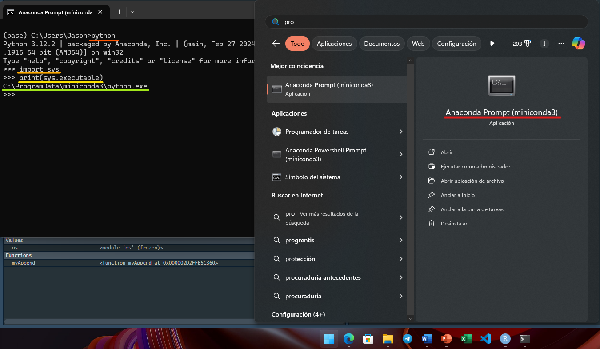
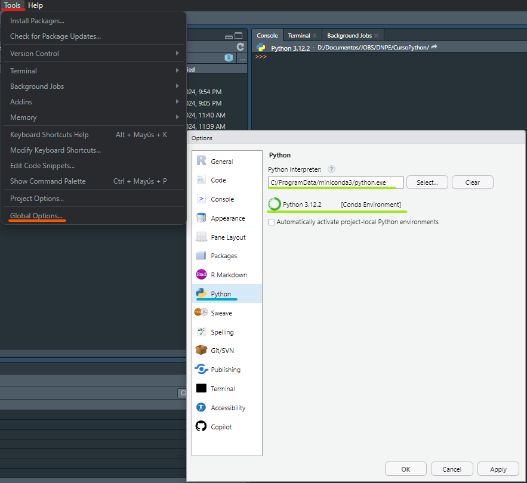
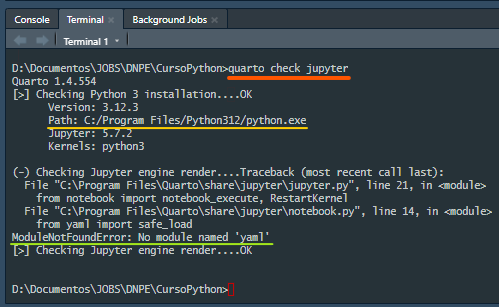
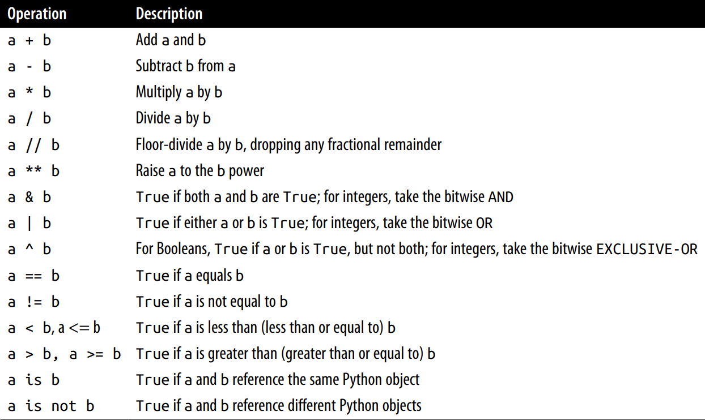

![]()
python
import sys
print(sys.executable)🤓 CONTEXTO, CONFIGURACIÓN E INTERACCIÓN 🐍
Este curso es una introducción al trabajo con datos en Python, ofreciendo una visión general de las principales características de las estructuras de datos y librerías incorporadas para la manipulación de datos.
El enfoque principal del curso es el análisis de datos basados en tablas y la preparación de datos para conjuntos pequeños que puedan manejarse en un ordenador personal. Para utilizar estas herramientas, a veces es necesario organizar los datos desordenados en una forma tabular. Python es ideal para esto, y cuanto más familiarizado esté con el lenguaje y sus tipos de datos, más fácil será preparar los conjuntos de datos para su análisis.
⚙️ Configuración Inicial
Rstudio
Usaremos la IDE de Rstudio (claramente no nos limitaremos a ella, usaremos Jupyter Notebook, VSC, Google Colab, etc). Pero más adelante trabajaremos con ambos lenguajes (Python y R) simultáneamente por lo cual nos servirá realizar esta configuración.
- Primero necesita conocer con exactitud la ruta del ejecutable
python.exe💥 que desea usar (sea con Python, conda, venv, etc). Para ello abra la consola de su intérprete (si usa un environment en particular no olvide ingresar a él 📥) y ejecute los comandos mostrados. Guarde dicha dirección en el portapapeles 📎.

- Ahora que conoce la dirección correcta de su intérprete de Python 📇, diríjase a la ruta mostrada en
Rstudio. 👀 En ocasiones no le saldrá para ser seleccionado, por eso es mejor tener la ruta, péguela en la casilla y espere unos segundos ⌚ que lo reconozca antes de salir y darle guardar o aplicar (si realiza lo anterior de forma muy rápida no le quedará). Le pedirá que reinicie sesión y ya deberá quedar si vuelve a ingresar.

- Por último instalaremos una librería que nos proporcionará un conjunto completo de herramientas para la interoperabilidad entre
PythonyR🛠️.
install.packages("reticulate")Conda
Como usaremos dentro de los .qmd el parámetro jupyter: python3, es necesario tener instalada dicha librería en su intérprete 💻, para lo cual ejecute (dentro de su kernel a usar y environment elegido):
conda install jupyter
# conda install numpy pandas scikit-learn matplotlib seaborn jupyterCompruebe que efectivamente haya sido descargado con:
conda listQuarto
Sí ejecuta el siguiente comando en el terminal ⌨️, deberá obtener algo como lo siguiente:
quarto check jupyter
Como puede observar tenemos un problema ⚠️ y es que no quedó el kernel que elegimos desde un inicio. Y el error mostrado se debe a que obviamente hay módulos que no hemos instalado en dicho intérprete que Quarto selecciona por defecto. Si desea obtener más información de dicho error consulte: Quarto Uses Wrong Python Version.
Para “corregir” lo anterior debemos apoyarnos de la documentación oficial, la cual indica que se debe crear un archivo _environment (sí así tal cual sin extensión alguna) y establecer los valores para QUARTO_PYTHON="C:\ProgramData\miniconda3\" ✔️. Así conseguimos que Quarto pueda establecer y fijar dicha configuración local para nuestro .qmd.
QUARTO_PYTHONse establece en: C:\ProgramData\miniconda3\PY_PYTHONse establece en: C:\ProgramData\miniconda3\RETICULATE_PYTHONse establece en: C:\ProgramData\miniconda3\
El siguiente blog 📔 explica demasiado bien lo que acabamos de hacer a mayor detalle, para renderizar un documento Quarto con un entorno específico en RStudio/Posit.
🟢 Finalmente, cree y ejecute un nuevo .qmd, puede utilizar la plantilla ejemplo, y agregue el siguiente chunk para que verifique por su propia cuenta que, a pesar de que Quarto a nivel global está usando otro interprete, al definir el _environment queda con el que usted especifica.
import sys
print(sys.executable)
print(sys.prefix)
print (sys.version)C:\ProgramData\miniconda3\pythonw.exe
C:\ProgramData\miniconda3
3.12.2 | packaged by Anaconda, Inc. | (main, Feb 27 2024, 17:28:07) [MSC v.1916 64 bit (AMD64)]🤖 IPython
🔖 Cualquier comando estándar de shell puede ser utilizado directamente en IPython anteponiendo el carácter !. Por ejemplo,
# : ....................... Shell Commands en IPython ........................ :
!lsBooks
LICENSE
Profile.jpg
Python Course.Rproj
_environment
_freeze
_publish.yml
_quarto.yml
_site
about.qmd
files
index.qmd
posts
styles.cssdirectory = !pwd
print(directory)['/d/Documentos/JOBS/DNPE/CursoPython']message = "Imprimiendo un texto desde shell"
!echo {message}Imprimiendo un texto desde shell✨ Conceptos Básicos
- 📐 Identación (no llaves {} ): Python utiliza espacios en blanco (tabuladores o espacios) para estructurar el código en lugar de utilizar llaves como en muchos otros lenguajes como
RyC++. - 🔣 No se necesita terminar con
;: El punto y coma puede usarse para separar múltiples sentencias en una sola línea.a = 1; b = 2; c = 3 - 🏷️ Las cadenas admiten tanto comillas simples
'como comillas dobles": Se prefieren las comillas dobles, y para cadenas de varias líneas con saltos de línea, puede utilizar comillas triples""". - 🆎 Vinculación (binding): En otros lenguajes, la asignación hará que se copien los datos. En Python, hace que se refieran ahora al mismo objeto,
a = [1, 2, 3]
b = a
a.append(4)
b[1, 2, 3, 4]# Cuando se pasan objetos como argumentos a una función, se crean nuevas variables
# locales que hacen referencia a los objetos originales sin necesidad de copiarlos
def myAppend(lista, elemento):
lista.append(elemento)
data = [1, 2, 3]
myAppend(data, 4)
data[1, 2, 3, 4]- 💪 Un lenguaje tipado: Cada objeto tiene un tipo (o clase) específico, con la ventaja de que las variables no tienen un tipo inherente asociado a ellas.
a = 5 ; print(type(a))
a = "cinco"; print(type(a))<class 'int'>
<class 'str'>"5" + 5--------------------------------------------------------------------------- TypeError Traceback (most recent call last) Cell In[8], line 1 ----> 1 "5" + 5 TypeError: can only concatenate str (not "int") to str
a = 4.5
b = 2
print(a / b)
print(isinstance(a, (int, float)))2.25
TrueHelp & Time
# Acceso a la Documentación:
help(len)Help on built-in function len in module builtins:
len(obj, /)
Return the number of items in a container.
letra = "a"
# letra.<Press Tab>
getattr(letra, "split")<function str.split(sep=None, maxsplit=-1)># Guión bajo '_' para salidas anteriores
1+1
2+2
print(_)<built-in method split of str object at 0x00007FFCCC1B1CE0># Acceder a las entradas anteriores (historial)
%history -n 1-3 1:
import sys
print(sys.executable)
print(sys.prefix)
print (sys.version)
2:
# : ....................... Shell Commands en IPython ........................ :
!ls
3:
directory = !pwd
print(directory)# : .......................... Timing Code Snippets .......................... :
%timeit sum(range(100)) # IPython Magic Commands409 ns ± 25.3 ns per loop (mean ± std. dev. of 7 runs, 1,000,000 loops each)%%timeit # Cuando es más complejo, baja el número de repeticiones
total = 0
for i in range(1000):
for j in range(1000):
total += i * (-1) ** j93.2 ms ± 5.81 ms per loop (mean ± std. dev. of 7 runs, 10 loops each)Imports
```{python}
# Modulo.py
PI = 3.14159
def cuadrado(x):
return x ** 2
```import Modulo
print(Modulo.cuadrado(5))
pi = Modulo.PI
# ......................................
from Modulo import PI, cuadrado
cuadrado(PI)
# ......................................
import Modulo as m
from Modulo import PI as kte, cuadrado as elevado
r1 = m.cuadrado(kte); print(r1)
r2 = elevado(6) ; print(r2)Operadores Binarios y de Comparación

a = [1, 2, 3]
b = a
c = list(a) # Crea una copia
print(a is b)
print(a is not c)True
Truea.append(4)
a == cFalse# Intercambiar los nombres de las variables:
a, b = 1, 2
# tmp = a
# a = b
# b = tmp
b, a = a, b
print(f'a = {a}, b = {b}')a = 2, b = 1ℹ️ Tipos Estándar
| Tipo | Descripción |
|---|---|
None |
El valor “nulo” de Python (solo existe una instancia del objeto None) |
str |
Tipo de cadena; contiene cadenas Unicode |
bytes |
Datos binarios en bruto |
float |
Número de punto flotante de doble precisión (nota que no hay un tipo double separado) |
bool |
Un valor booleano True o False |
int |
Entero de precisión arbitraria |
Booleans
print(int(False)); print(int(True))
print(True + False)
print(not not not not True)
print(bool(2024.75)) # Todo valor !=0 se convierte en True
print(bool(".")) # Todo valor !="" se convierte en True0
1
1
True
True
TrueStrings
Abc.
a = "Hola mundo \\>"
b = """
Esta cadena es más larga que
abarca varias líneas
"""
c = r"D:\Documentos\Carpeta"
print(a); print(b); print(c)
b.count("\n")Hola mundo \>
Esta cadena es más larga que
abarca varias líneas
D:\Documentos\Carpeta3# Los strings en Python son inmutables: no se puede modificar una cadena
print(a[5])
a[5] = "M"m--------------------------------------------------------------------------- TypeError Traceback (most recent call last) Cell In[21], line 3 1 # Los strings en Python son inmutables: no se puede modificar una cadena 2 print(a[5]) ----> 3 a[5] = "M" TypeError: 'str' object does not support item assignment
a.replace("m", "M")'Hola Mundo \\>'a # Tras esta operación, la variable no se modifica'Hola mundo \\>'list(a) # Las cadenas son una secuencia de caracteres Unicode['H', 'o', 'l', 'a', ' ', 'm', 'u', 'n', 'd', 'o', ' ', '\\', '>']Formatted string
Existen varios métodos para formatear cadenas de texto, entre los cuales encontramos:
- Operador de Formato
%
Nombre = "Pepito"
Edad = 33
Pi = 3.141592
print("Hola, mi nombre es %s y tengo %d años. Y sé que pi vale: %.2f." % (Nombre, Edad, Pi))Hola, mi nombre es Pepito y tengo 33 años. Y sé que pi vale: 3.14.- Método
.format()
print("Hola, mi nombre es {} y tengo {} años. Y sé que pi vale: {:.2f}.".format(Nombre, Edad, Pi))
print("Nombre: {name}, Edad: {age}".format(name = "Luis", age = 33))
print("El {0} se encuentra en el {1} y el {1} se encuentra en el {0}.".format("sol", "cielo"))Hola, mi nombre es Pepito y tengo 33 años. Y sé que pi vale: 3.14.
Nombre: Luis, Edad: 33
El sol se encuentra en el cielo y el cielo se encuentra en el sol.# 0:.3f El 1re valor será un flotantes con 3 decimales
# 1:s El 2do valor será un string
# 2:d El 3re valor será un entero
template = "{0:.3f} {1:s} equivalen a US${2:d}"
template.format(3.960, "pesos Colombianos", 1) # Intente modificar el tipo de alguno de estos'3.960 pesos Colombianos equivalen a US$1'- f-strings
Tasa = 3.960
Moneda = "Colombianos"
f"{Tasa:.4f} pesos {Moneda} equivalen a US${Tasa/Tasa}"'3.9600 pesos Colombianos equivalen a US$1.0'# Cálculos Dentro:
a = 5; b = 10
print(f"La suma de {a} y {b} es {a + b}. Además a*b = {a*b}")
# Alinear Texto:
print(f"{'izquierda':<10} {'centrado':^10} {'derecha':>10}")
# Mostrar Números en Diferentes Bases:
Numero = 255
print(f"Decimal: {Numero}, Binario: {Numero:b}, Hexadecimal: {Numero:x}, Octal: {Numero:o}")
# Incluir Expresiones y Métodos:
Txt = "Amo Python"
print(f"El texto en mayúsculas es {Txt.upper()}.")
# Combinación con Diccionarios:
Pais = {"nombre": "Colombia", "NoPoblacion": 50}
print(f"País: {Pais['nombre']}, Habitantes: {Pais['NoPoblacion']}")
# Incluir Llaves Literales:
print(f"Este es un valor literal en llaves: {{Numero}}, y este es el valor de la variable: {Numero}.")La suma de 5 y 10 es 15. Además a*b = 50
izquierda centrado derecha
Decimal: 255, Binario: 11111111, Hexadecimal: ff, Octal: 377
El texto en mayúsculas es AMO PYTHON.
País: Colombia, Habitantes: 50
Este es un valor literal en llaves: {Numero}, y este es el valor de la variable: 255.- Método
string.Template
from string import Template
template = Template("Hola, mi nombre es $name y tengo $age años.")
mensaje = template.substitute(name = "Pepito", age = 33)
print(mensaje)Hola, mi nombre es Pepito y tengo 33 años.| Método | Sintaxis | Ventajas | Desventajas |
|---|---|---|---|
Operador % |
Hola, %s % “mundo” |
Simple y familiar para quienes conocen C | Menos flexible y más propenso a errores |
Método .format() |
Hola, {}.format(“mundo”) |
Muy flexible, soporta nombres y posiciones | Sintaxis más verbosa |
| f-strings | f"Hola, {variable}" |
Muy legible, permite expresiones dentro de {} |
Disponible solo en Python 3.6+ |
string.Template |
Template("Hola, $nombre") |
Simple y seguro, fácil de leer | Menos potente para formateo complejo |
Type casting
Abc.
None
Abc.
Dates and times
Abc.
from datetime import datetime, date, time
dt = datetime(2024, 1, 31, 20, 30, 21)
dt.day
dt.date()
dt.time()
dt.strftime("%Y-%m-%d %H:%M")'2024-01-31 20:30'dt_hour = dt.replace(minute = 0, second = 0)
dt_hourdatetime.datetime(2024, 1, 31, 20, 0)delta = datetime.now() - dt
deltadatetime.timedelta(days=152, seconds=75191, microseconds=3941)🚩 Objetos Mutables e Inmutables
Tuplas
Note
Una tupla es una secuencia ordenada de objetos de longitud fija e inmutable (una vez asignada no puede modificarse). La forma más sencilla de crear una tupla es con una secuencia de valores separados por comas entre paréntesis.
tup1 = (1, 2, 2) # Pueden contener elementos repetidos
tup2 = 4, 5, 6 # Los paréntesis pueden omitirse
print(tup1); print(tup2)(1, 2, 2)
(4, 5, 6)# Se puede convertir cualquier secuencia o iterador
print( tuple([7, 8, 9]) )
print( tuple("Texto") )(7, 8, 9)
('T', 'e', 'x', 't', 'o')tupCompleja = (2, 4, 8), (3, 5)
print(tupCompleja)
tupCompleja[0]((2, 4, 8), (3, 5))(2, 4, 8)tupMixta = tuple(['txt', [1, 2], True])
tupMixta[1].append(3) # Si un objeto dentro de una tupla es mutable, se puede modificar
print(tupMixta)
tupMixta[2] = False('txt', [1, 2, 3], True)--------------------------------------------------------------------------- TypeError Traceback (most recent call last) Cell In[37], line 4 2 tupMixta[1].append(3) # Si un objeto dentro de una tupla es mutable, se puede modificar 3 print(tupMixta) ----> 4 tupMixta[2] = False TypeError: 'tuple' object does not support item assignment
print( tup1*2 + (20, 24) + ('year',) )(1, 2, 2, 1, 2, 2, 20, 24, 'year')# Desempaquetado (unpacking)
uno, dos, tres = tup1
print(uno)
(a, b, c), (d, e) = tupCompleja
print(a)1
2seq = [(1, 2, 3), (4, 5, 6), (7, 8, 9)]
for a, b, c in seq:
print(f'a = {a}, b = {b}, c = {c}')a = 1, b = 2, c = 3
a = 4, b = 5, c = 6
a = 7, b = 8, c = 9first, second, *rest = (1, 2, 3, 4, 5)
print(f"{first} || {second} || {rest}")
# El guión bajo (_) para descartar las variables no deseadas
first, second, *_ = (1, 2, 3, 4, 5)1 || 2 || [3, 4, 5]# Si desea definir una tupla con un solo elemento debe incluir una coma al final:
my_t = (3,)
print(my_t)
# Métodos
(1, 0, 1, 1, 0).count(0)(3,)2Listas
Una lista es una colección de elementos en un orden determinado. Puedes poner lo que quieras en una lista, y los elementos que la componen no tienen por qué estar relacionados de ninguna manera en particular. En Python, los corchetes [ ] indican una lista, y los elementos individuales de la lista están separados por comas.
- Las posiciones de índice empiezan en 0, no en 1.
Note
Las listas son de longitud variable y su contenido puede modificarse (son mutables).
motorcycles = [0, "honda", "yamaha", "suzuki", None]
print(motorcycles)
list(tup1)[0, 'honda', 'yamaha', 'suzuki', None][1, 2, 2]# Añadir y eliminar elementos
motorcycles.append("ducati")
motorcycles.insert(1, "1")
del motorcycles[-2] # Removing an Item Using the del Statement
motorcycles.pop(0) # Popping Items from Any Position
print(motorcycles)['1', 'honda', 'yamaha', 'suzuki', 'ducati']
Caution
La inserción (insert) es más costosa computacionalmente que la adición (append), ya que las referencias a los elementos subsiguientes deben desplazarse internamente para dejar espacio al nuevo elemento.
motorcycles.append("2"); print(motorcycles)
motorcycles.remove("2"); print(motorcycles) # Removing an Item by Value['1', 'honda', 'yamaha', 'suzuki', 'ducati', '2']
['1', 'honda', 'yamaha', 'suzuki', 'ducati']# Sorting a List
motorcycles.sort(); print(motorcycles)
motorcycles.sort(reverse = True); print(motorcycles)
print(sorted(motorcycles)); print(motorcycles)['1', 'ducati', 'honda', 'suzuki', 'yamaha']
['yamaha', 'suzuki', 'honda', 'ducati', '1']
['1', 'ducati', 'honda', 'suzuki', 'yamaha']
['yamaha', 'suzuki', 'honda', 'ducati', '1']print(motorcycles.reverse())
len(motorcycles)None5# Python returns another index error
listA = []
print(listA[-1])--------------------------------------------------------------------------- IndexError Traceback (most recent call last) Cell In[48], line 3 1 # Python returns another index error 2 listA = [] ----> 3 print(listA[-1]) IndexError: list index out of range
squares = []
for value in range(1, 11):
squares.append(value ** 2)
print(squares)
# List Comprehensions
squares = [value**2 for value in range(1, 11)]
print(squares)[1, 4, 9, 16, 25, 36, 49, 64, 81, 100]
[1, 4, 9, 16, 25, 36, 49, 64, 81, 100]# Slicing a List
print(motorcycles[0:3])
print(motorcycles[2:])
print(motorcycles[-2:])['1', 'ducati', 'honda']
['honda', 'suzuki', 'yamaha']
['suzuki', 'yamaha']# Copying a List
onces = ["pizza", "arepa", "empanada"]
tusOnces = onces[:]
onces.append("buñuelo")
tusOnces.append("pan")
print(onces); print(tusOnces)['pizza', 'arepa', 'empanada', 'buñuelo']
['pizza', 'arepa', 'empanada', 'pan']Diccionarios
Note
Un diccionario (conocido en otros lengujaes como maps o associative arrays) almacena una colección de pares clave-valor, donde clave y valor son objetos Python. Cada clave está asociada a un valor, de modo que un valor puede ser convenientemente recuperado, insertado, modificado o eliminado dada una clave en particular. Tenga presente que las claves únicas (no permiten duplicados en las claves).
fisico = {'color': 'blanco', 'altura': 1.79}
fisico["ojos"] = "azules"
fisico["peso"] = 87
print(fisico){'color': 'blanco', 'altura': 1.79, 'ojos': 'azules', 'peso': 87}Conjuntos
Warning
This is an example of an tip callout
➿ Flujo de Control
if, elif, and else
w = 5; x = 4; y = 3; z = 2
if x < 0:
print("x es negativo")
elif x == 0:
print("x es cero")
elif w > x > y > z:
print("Los valores están en orden")
else:
print("Otro caso diferente")Los valores están en ordenfor
numeros = [1, 2, None, 4, None, 5] # sum(numeros)
total = 0
for value in numeros:
if value is None:
continue
if value == 4:
break # La sentencia 'break' se usa para salir del bucle
total += value
total3# 'break' sólo termina el for más interno, cualquier for externo continuará
for i in range(4):
for j in range(4):
if j > i:
break
print((i, j))(0, 0)
(1, 0)
(1, 1)
(2, 0)
(2, 1)
(2, 2)
(3, 0)
(3, 1)
(3, 2)
(3, 3)while
Esta estructura permite ejecutar repetidamente un bloque de código mientras una condición especificada se evalúa como verdadera. Este ciclo es útil cuando no se sabe de antemano cuántas veces se necesitará repetir el bloque de código, a diferencia del ciclo for, que itera sobre una secuencia de elementos de longitud conocida.
while True:
entrada = input("Escribe 'salir' para terminar: ")
if entrada.lower() == "salir":
breakpass
Es la sentencia no-op (o no hacer nada) de Python. Puede usarse en bloques en los que no se va a realizar ninguna acción. Sólo es necesaria porque Python utiliza espacios en blanco para delimitar los bloques.
Cuando la ejecución del programa alcanza una sentencia continue, la ejecución del programa salta inmediatamente al inicio del bucle y reevalúa la condición del bucle.
while True:
print('¿Quién eres tú?')
name = input()
if name != 'Juan':
continue
print('Hola Juan, cuál es tu contraseña (es un equipo)')
password = input()
if password == 'nacional':
break
print('Acceso Concedido.')
- Pass (
for,if): No realiza ninguna acción y se utiliza como marcador de lugar (placeholder para futura implementación).- Continue (
for,while): Salta a la siguiente iteración del bucle, omitiendo el resto del código en la iteración actual.- Break (
if): Termina el bucle inmediatamente, saliendo de la estructura de control de flujo.
range
print(f"{ range(10) }")
print(f"{ range(1, 10) }")
print(f"{ list(range(0, 20, 2)) }")
print(f"{ list(range(5, -1, -1)) }")range(0, 10)
range(1, 10)
[0, 2, 4, 6, 8, 10, 12, 14, 16, 18]
[5, 4, 3, 2, 1, 0]Python Enhancement Proposal (PEP): https://peps.python.org/pep-0008/
https://docs.python.org/es/3/library/trace.html python -m trace –count -C . somefile.py Esto ejecutará somefile.py y generará listados anotados de todos los módulos de Python importados durante la ejecución en el directorio actual1.